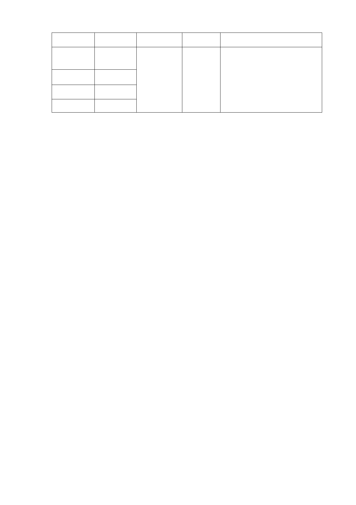

原計畫
社會福利
設施用地
公園用地
商業區
道路用地
面積（㎡） 新計畫 面積（㎡）
變更理由
29,050
16,155
16,181
3,705
特定專用區
65,091
1. 以提高公共利益為前提，整體
規劃適當、適量之公共住宅並
提供複合性之公共服務。
2. 全區開放空間整體規劃留設。
3. 維持原有都市計畫提供機能，
並預留辦公空間。
（二） 細部計畫：
１. 擬定本計畫區為「公共服務特定專用區」，建蔽率 40%、容
積率 400％；擬提供社會福利設施、復健照護設施、圖書分
館、鄰里型商業使用、公共住宅等使用，並預留未來信義區
公所辦公空間。
２. 使用項目除「第 25 組：特種零售業」、「第 32 組：娛樂服務
業」、「第 34 組：特種服務業」、「第 36 組：殮葬服務業」不
得使用外，比照本市土地使用分區管制自治條例第三種商業
區規定辦理。
四、 都市設計管制(有關公共開放空間部分)：
（一） 帶狀式開放空間
１. 南側臨福德街面，應退縮 15 公尺帶狀式開放空間，並預留
供捷運車站相關設施使用。
２. 東側臨大道路、西側臨福德街 84 巷：兩側各退縮 15 公尺帶
狀式開放空間。
３. 北側臨林口街 80 巷，應退縮 22 公尺帶狀式開放空間。
（二） 公共開放空間
於基地東南側(大道路及福德街口處)留設1000平方公尺
之公共開放空間。
五、 本案係市府104年5月11日府都規字第10432384703號函送到會，
自104年5月12日起公開展覽30天。
-5-